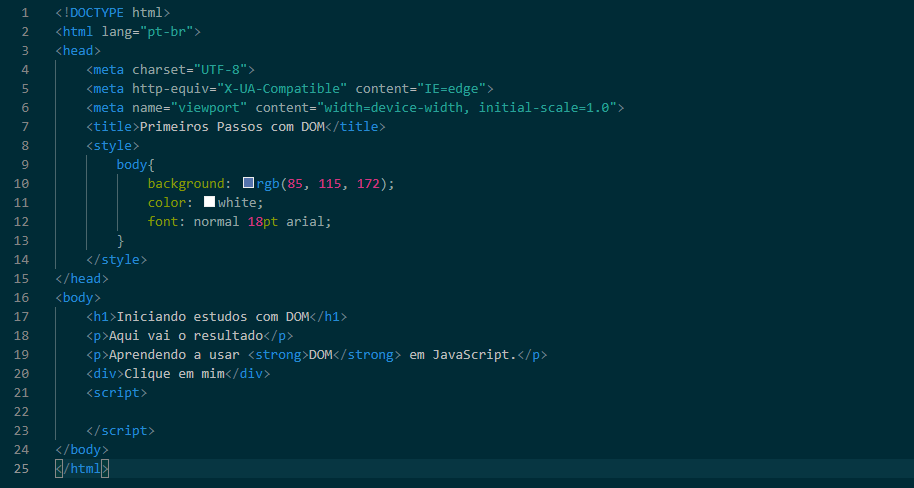
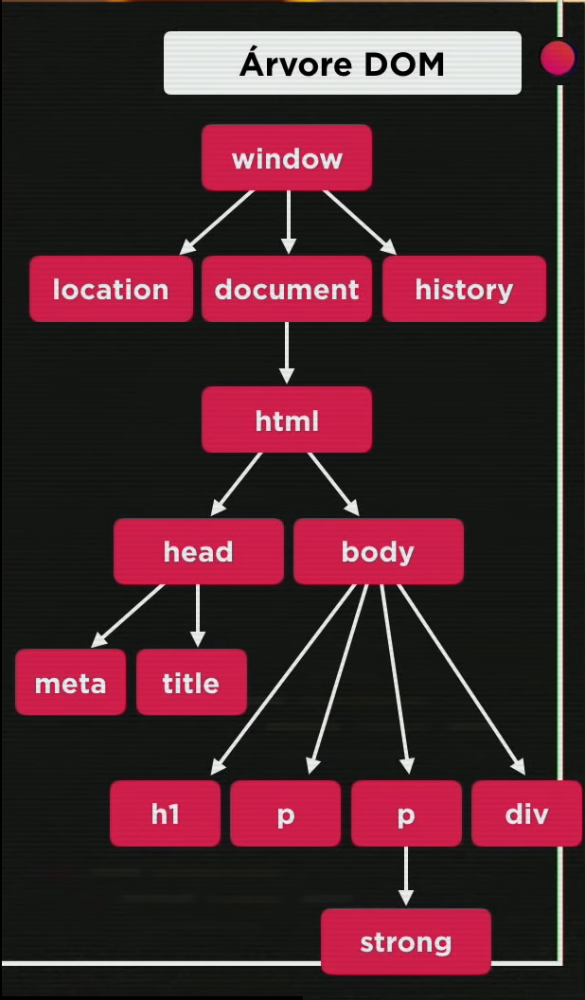

DOM significa Document Object Model, ou seja, é um conjunto de objetos dentro do navegador que permitirão a execução do site.
O DOM pode ser estruturado como uma Árvore.
Vamos tomar por exemplo o seguinte código HTML criado no curso:
Neste caso, teríamos a Árvore DOM organizada da seguinte forma:
Perceba também que existe uma hierarquia de objetos em cada elemento da árvore. Podemos definir como:
A raiz do DOM. A raiz sempre vai ser o elemento window, que se refere a janela do navegador onde o site está exibido.
É o objeto que está logo acima do objeto onde estamos trabalhando. Na imagem acima, por exemplo, o parent do elemento HTML é o elemento document.
É o objeto ou objetos que estão logo abaixo do objeto onde estamos trabalhando. Ainda com o HTML como exemplo, temos dois childs dele, o head e o body.
Podemos selecionar os elementos DOM do nosso documento de diversas maneiras:
getElementsByTagName()Selecionar por Marca é útil quando queremos utilizar todos os elementos do mesmo tipo, como por exemplo, criar uma característica para todas as tags link.
var p1 = window.document.getElementsByTagName('p')
//se fizermos assim, pedimos para a variável p1
receber o valor de todas as tags p do documento
var p1 = window.document.getElementsByTagName('p')[0]
//especificando um número dentro dos colchetes, pedimos
para selecionar uma única tag, correspondente ao número,
onde a primeira tag do documento será a 0, a segunda a 1,
e assim sucessivamente.
getElementById()getElementsByName()getElementsByClassName()querySelector() ou querySelectorAll()Utilizamos a seleção de um elemento para podermos chamar o script especificamente para ele.
Atenção! Atualmente, o mais recomendado é utilizar a seleção por Seletor.
innerText:Pega o texto interno de um elemento, ex: p1.innerText
innerHTML:Pega o texto e a formatação HTML interna. Ex: p1.innerHTML